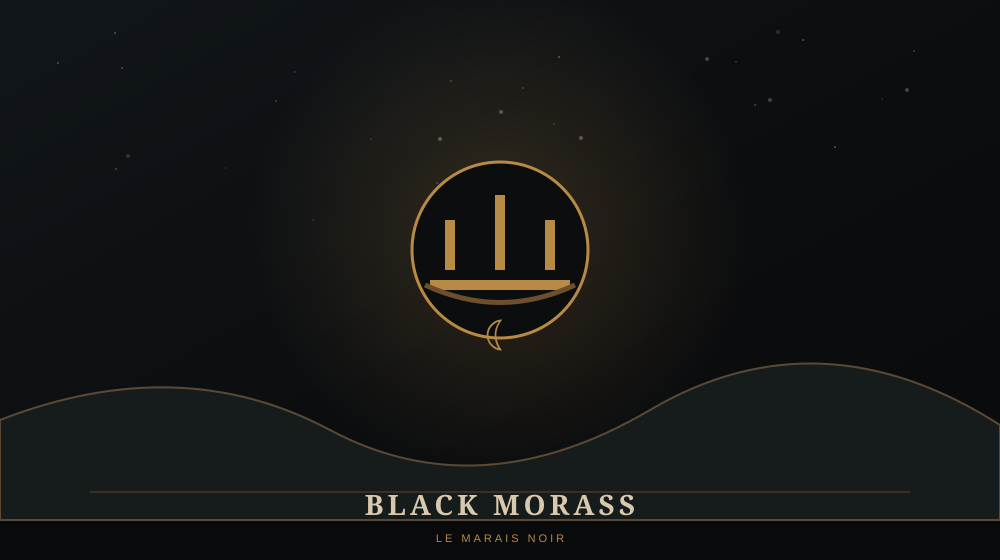

WARCRAFT / LIEUX / WARCRAFT I
BLACK MORASS
Les marais aux portes d'un autre monde

TYPERégion marécageuse
IMPORTANCEStratégique
LIÉ ÀPorte des ténèbres
PÉRIODEPremière Guerre
🌫️ LE BLACK MORASS
Le Black Morass est une vaste région marécageuse du sud d'Azeroth. Pendant la Première Guerre, elle est fortement associée aux opérations de la Horde.
🚪 UNE RÉGION CAPITALE
Son importance dépasse les simples batailles qui s'y déroulent : cette partie du monde est intimement liée à l'arrivée des Orcs en Azeroth et à la Porte des ténèbres.
⚠️ LORE ULTÉRIEUR / SPOILERS
Le paysage changera profondément au cours de l'histoire. La zone sera plus tard connue sous le nom de Blasted Lands, tandis que les Caverns of Time permettront de revisiter le Black Morass à une autre époque.
💡 LE SAVAIS-TU ?
← RETOUR AU CODEX WARCRAFTLe nom « Black Morass » permet de voir à quel point la géographie d'Azeroth a elle-même évolué depuis les premiers jeux.